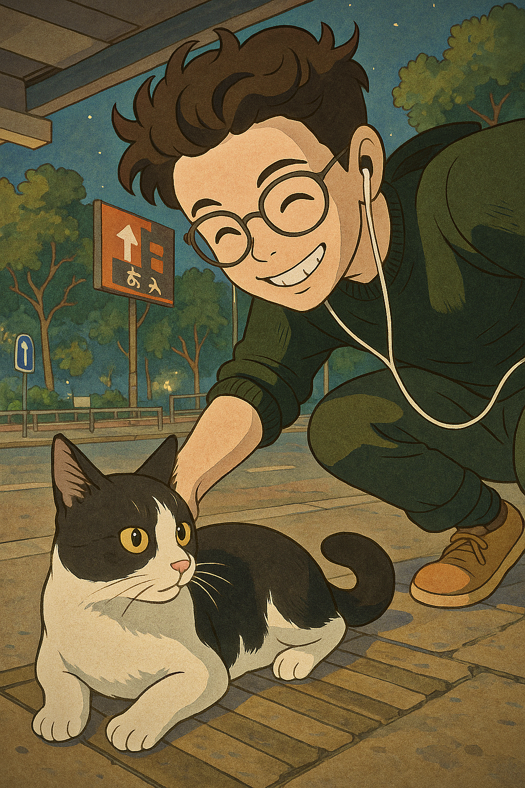
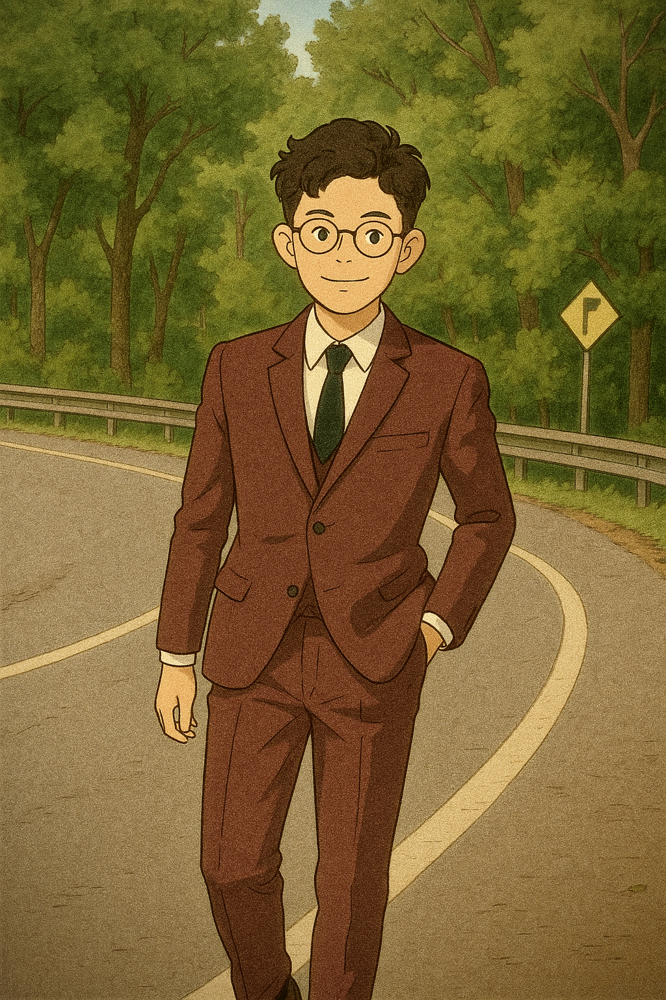
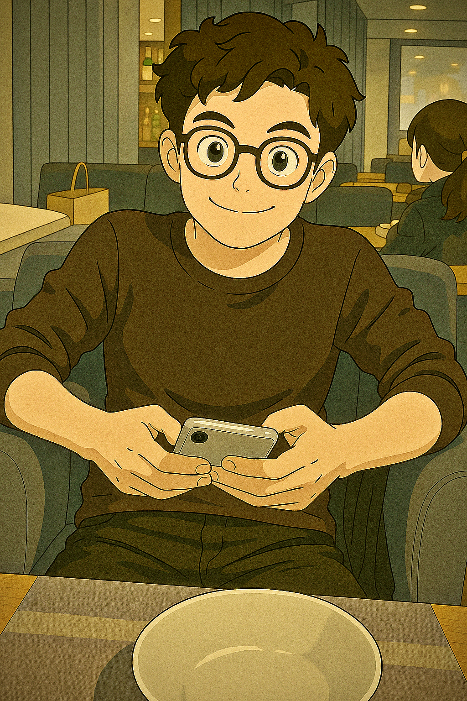

Visual Archives: Character1



Initializing...
I will show some of my website building skills here, crafting immersive digital experiences.
Discover MoreHe likes to paint, plays cricket, good at technology. He is the no. 2 senior here. He is the angry young man here. But he is also loving and caring.
His journey is one of contradictions, balancing a fierce demeanor with a hidden depth of compassion.
This demonstration showcases advanced JavaScript animations, responsive design principles, and a keen eye for visual detail. The goal is to create an engaging user experience reminiscent of top-tier interactive websites.
Built with core web technologies, focusing on performance and modern aesthetics. While this demo uses vanilla JS, the concepts readily apply to frameworks like React or Next.js.
Potential future developments could include: